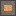

CVD 炉（層間膜）
CVD Furnace (Interlayer)・ブロック・Semiconductor
仮（まだ本物どおりでない所がある）
本当の歴史：[9-30] エピタキシーと CVD（1960年）
説明
①子ども 気体どうしを反応させて、ウェハーの上に膜を積む炉。1層目の配線の上に絶縁膜をかぶせる。
②学生 電気 2kW。1層目の金属を削ったウェハー1〜8枚＋シランのボンベ1＋酸素1 → 層間膜を付けたウェハー＋空のボンベ（20秒）。酸素は隣のガスホルダーから。そのあと VIA の窓（レジスト→エッチング）→ 2層目の Al → 削ると、2層目の配線（METAL2）。 酸素の代わりにアンモニアを入れると、金属を削り終えたウェハーに窒化ケイ素の保護膜（3SiH4 + 4NH3 → Si3N4 + 12H2）。
③大人 SiH4 + O2 → SiO2 + 2H2O を約400℃ で。熱酸化（約1000℃）はアルミ（660℃ で溶ける）の上ではできないので、金属の上の絶縁膜は CVD で積む。VIA（縦の穴）で1層目と2層目をつなぐ。
④ガチ 配線を2層にすると、線がまたいで交差できるので、チップを小さくできる。⚠️ 2層配線が量産で広まった年は 1970年代ごろ（出典で確かめ中）。今のチップは10層をこえる。
作り方
使い道
（このアイテムを使うレシピは無い）